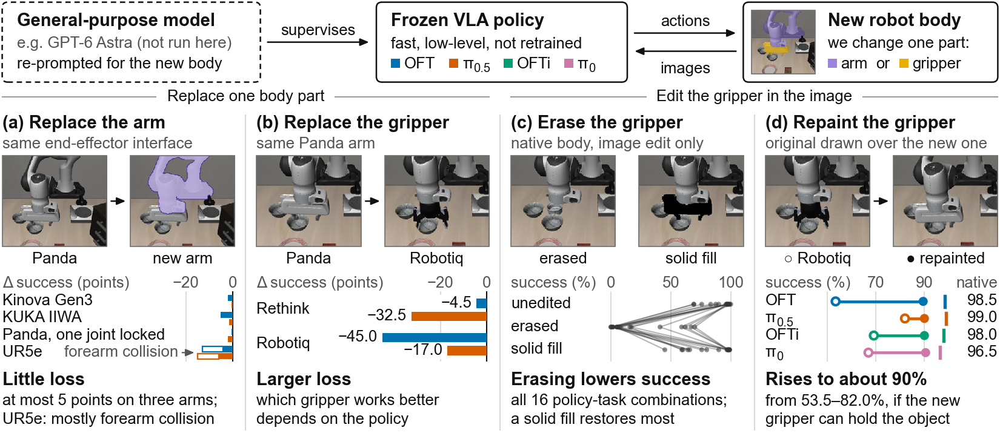
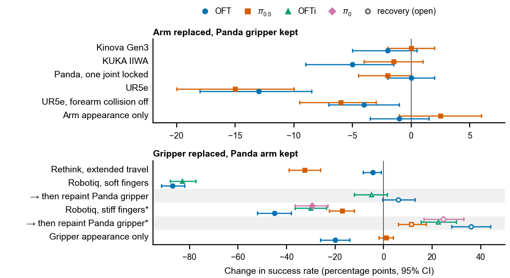
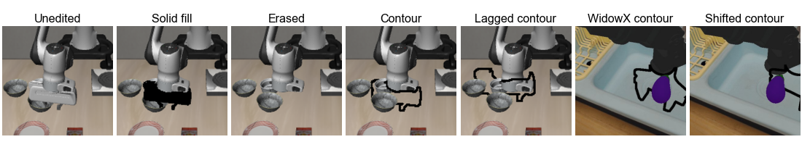
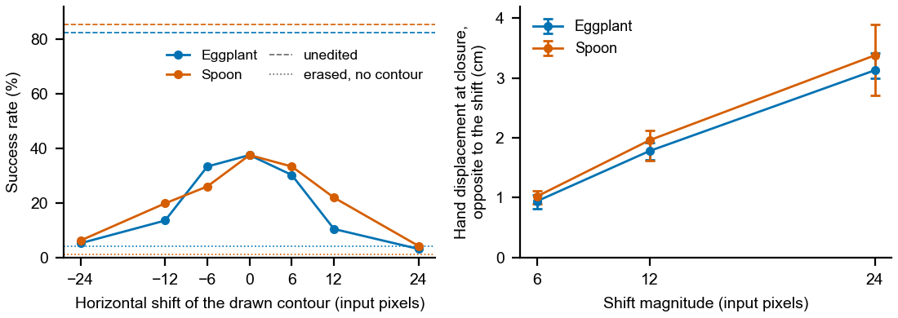

Change the Arm, Mind the Gripper
Reusing Frozen VLA Policies on a New Robot Body
National University of Singapore

Abstract
Hierarchical robot systems now let a general-purpose model such as GPT-6 Astra supervise a fast low-level vision-language-action (VLA) policy. On a new robot, the model adapts through its prompt, but the policy, trained for one body, is normally retrained. We ask when it can instead be reused frozen, changing one robot component at a time across six public VLA policies in simulation. Under the same end-effector interface, replacing the arm costs little unless the new arm collides with the scene. Replacing the gripper can cost far more, and which gripper works better depends on the policy. Erasing a policy's own gripper from the image lowers success in all 16 policy-task combinations, yet several policies still close it in nearly every episode, centimeters from the object. Drawing the original gripper over a new one that can hold the object raises four policies from between 53.5% and 82.0% success to about 90% on LIBERO-Spatial. Before collecting new data, a team moving a hierarchical system to a new robot can swap the arm by keeping the end-effector interface, choose a gripper that suits the policy, and draw the original gripper over it in the image. The supervising model should watch the object, not the closure command. These steps move part of cross-embodiment transfer from training to deployment.
Which body changes a frozen policy absorbs

What the policy needs to see


Takeaways for deployment
- Reuse the policy across arms that keep the end-effector interface, and check that the new arm does not hit the scene.
- Choose the gripper together with the policy that will run on it.
- If the gripper must change, repaint the original one into the image.
- Keep a filled gripper visible at its true position, at least until the first closure.
- Do not treat a closure command as evidence of a grasp; check whether the object is held.
Citation
@techreport{shi2026mindthegripper,
title = {Change the Arm, Mind the Gripper: Reusing Frozen VLA Policies on a New Robot Body},
author = {Shi, Yanchun},
institution = {National University of Singapore},
note = {CS5478 course project report},
year = {2026}
}